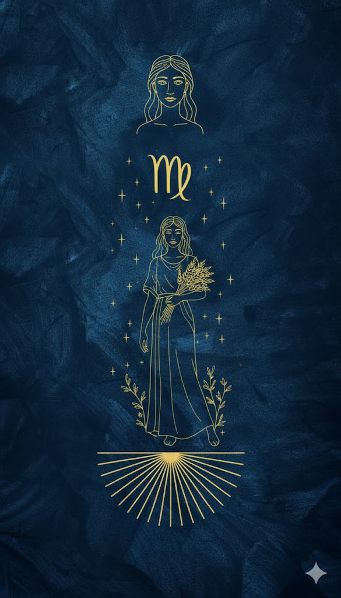

Başak
23 Ağustos – 22 Eylül · Element: Toprak · Yönetici: Merkür

Genel Profil
Başak; düzen, analiz ve iyileştirme odaklıdır. Detayı görür, sistemi kurar.
Mükemmeliyetçilik yorabilir; “yeterince iyi”yi seçtiğinde verimi artar.
Güçlü Yönler
- Analitik düşünme
- Düzen kurma
- Sorumluluk
- Çözüm üretme
Zorlayıcı Yönler
- Aşırı eleştirellik
- Kaygı
- Mükemmeliyetçilik
- Detaya takılma
Aşk
Güvenilir ve sadık; küçük jestleri önemser.
Kariyer
Veri, mühendislik, kalite, sağlık, planlama, analiz ve operasyon işleri.
İpucu
Bugün bir işi %80’de bırak ve teslim et; sonra iyileştirirsin.